DirectX12 エンジン
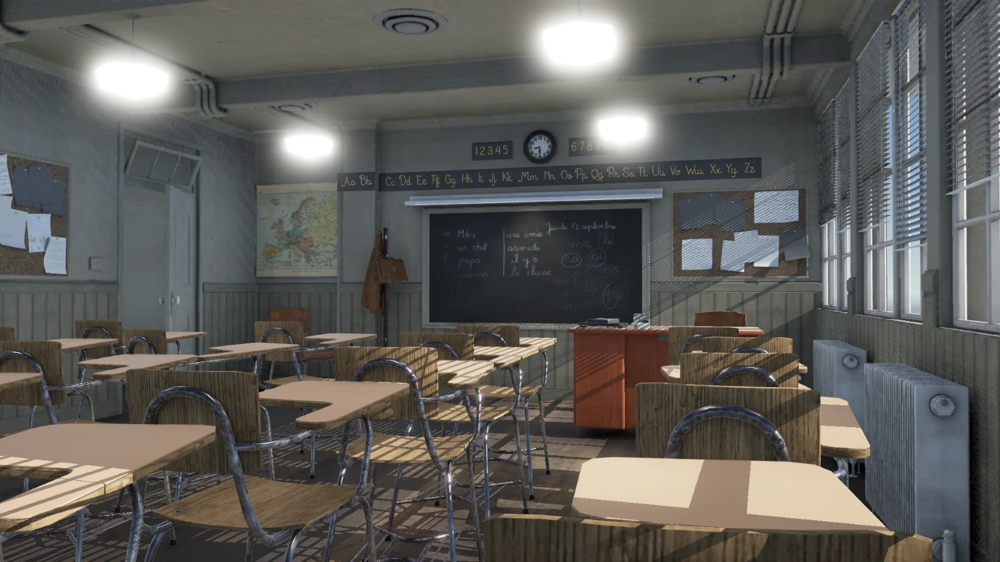
C++20 と DirectX12 で作った自作のゲームエンジンです。自作の DirectX11 フレームワークを元に描画の層を Direct3D 12 で作り直し、ゲームを作るためのエディターと Component の仕組み、DXR のレイトレーシング、PBR、FBX と VRM のキャラクター、地形と GPU の草木、剛体物理などを作りました。
概要
| 制作期間 | 2026年7月〜 |
|---|---|
| 担当 | 全体（設計、描画、レイトレーシング、エディター） |
| 開発環境 | C++20、Direct3D 12、HLSL（シェーダーモデル 6.6、DXC）、Visual Studio 2026 |
| ライブラリ | Dear ImGui（エディターの窓）、Jolt Physics（PMX の揺れものの計算）、DirectX-Headers（d3dx12） |
全体の形
DirectX11 版からの作り直し
自作の DirectX11 フレームワークを元に、ゲームのコードが使う Scene の層（Scene・GameObject・Component）はそのままにして、その下の描画の層を Direct3D 12 で作り直しました。そのうえで、DirectX12 で使えるようになるレイトレーシング、メッシュシェーダー、Bindless、複数のキューを使う形を足しています。
- Direct3D 12 の型はエンジンの描画まわりだけで使い、ゲームのコードには出さない
- 作り直しの途中で、DirectX11 版と同じ場面を同じフレームで撮って比べ、物が欠ける・色が違うなどの違いが無いことを確かめた
- Debug と Development 構成ではエディターの窓の中に、Release 構成では画面に直接ゲームを描く
Debug・Development・Release
開発の段階に合わせて、3 つのビルド構成を使い分けています。
- Debug: 最適化なし。エディター、アサート、D3D12 のデバッグレイヤーが入る
- Development: 最適化を掛けたまま、エディターとアサートを使える。デバッグレイヤーは要るときだけ入れる
- Release: エディターとアサートを外し、リンク時の最適化を掛ける配布用の構成
描画のパスの流れ
描画は、役目ごとに分けたパスを決まった順に並べて行います。レイトレーシングを使うときは、パスの前に計算のキューで加速構造を作ります。
- 計算のキュー: 骨で動くモデルの位置を計算シェーダーで出し、BLAS と TLAS を作る（レイの影か AO を使うときだけ）
- ShadowPass: カスケードシャドウマップを描く
- SceneTargetPass: 16 ビットの浮動小数で MSAA の場面の的に切り替える
- OpaquePass: 不透明の物を描く
- VegetationPass: 計算シェーダーで選んだ草木を描く
- SkyPass: 何も描かれていない画素に空を描く
- OutlinePass: 輪郭線を描く
- TransparentPass: 半透明の物を、カメラから遠い順に描く
- ParticlePass: 粒を描く
- AmbientOcclusionPass: DXR で AO を求めて、場面の色に掛ける（使うカメラだけ）
- PostEffectPass: MSAA を 1 サンプルに解決し、ブルーム、露出とトーンマップ、ディザ、FXAA を掛け、sRGB に直して画面に出す
- SpritePass: 画面の UI と文字を描く
- エディターのパス: 線、クリック選択、選んだ物の縁、エディターの窓を描く（Debug と Development 構成）
エンジンの仕組み
Scene・GameObject・Component
コードで GameObject を作って Component を付け、場面を組み立てます。DirectX11 版の形を引き継ぎ、物の多い場面でも速く回るように作り直しました。
- Component は OnStart、FixedUpdate、Update、LateUpdate などを持つ
- コールバックを持つかどうかをコンパイル時に判定し、要らない呼び出しを省く
- 物の情報を 1 つの表に集めたデータ指向の形にした
Component のリフレクション
C++ には実行時に型の中身を見る仕組みが無いので、Component の欄を表にして登録する仕組みを作りました。1 つの表から、インスペクターの表示と「コードとしてコピー」を作ります。
- .cpp に登録のマクロを 1 行書くと、起動時に型が登録される
- 欄はセッター経由、ラムダ、メンバの直接のどれでも書ける
- 値の型: bool、整数、float、Vector2〜4、Quaternion、enum、文字列、構造体、optional、vector
- エンジンの Component とゲームの Component を同じ形で登録する
傾いて転がる剛体物理
ゲームの物理は自分で作っています。物が回転し、傾いて転がり、積み重なります。
- 形: 球、箱、カプセル。固定ステップで進める
- 慣性を形から計算する。複数の形は体積で質量を分け、重心の指定は平行軸の定理で扱う
- 箱どうしは分離軸（面 6 軸と辺 9 軸）で判定し、Sutherland-Hodgman で切り取って接点を最大 4 点求める
- 逐次インパルスとウォームスタートで解き、摩擦と転がり抵抗を入れる
UI の入れ子と 9 スライス
画面の UI を、アンカー、ピボット、基準の解像度で置きます。
- 親をたどる入れ子。親の回転、倍率、グループの透明度が子に効く
- 9 スライス: 角を伸ばさず最大 9 枚に分けて描く。枠の倍率、中央の省略、UV の反転に対応
エディター
エディター
Debug と Development 構成では、Dear ImGui を使ったエディターの窓から、場面を見て、その場で直せます。
- Game の窓: 場面を専用の的に描き、その絵を窓の中に出す
- Scene の窓: 編集用のカメラから見た場面を、同じ光と描き方でもう一度描く
- 階層、インスペクター、資産、プロジェクト、ログ、途中の的の窓
- 窓の配置: 既定の形と 4 列の形を切り替える。4 列では Game と Scene の窓が両方 16:9 になる幅を計算する
- 再生、停止、一時停止、1 フレーム送り。停止すると、再生を始めたときの場面をコードから作り直す
- 描画の確かめ: 途中の的を並べて見る窓と、材質の値を色で見る表示
- シェーダーの読み直し: F5 で描画のシェーダーと読み込んだ計算シェーダーをコンパイルし、全部通って C++ の側と食い違わないときだけ入れ替える。古い PSO は GPU が使い終わってから手放す
- パスごとの GPU のマーカー、デバッグレイヤーの文をログに出す仕組み、デバイスが落ちたときの DRED の記録
Scene の窓のクリック選択
Scene の窓で物をクリックすると、その物を選べます。GPU に物の番号を描いて読み戻す形なので、見えている形のとおりに選べます。
- R32_UINT の的と深度に、シザーでクリックした 1 画素だけを描いて読み戻す
- 骨で動くモデルは描いている姿勢で当たり、切り抜きの穴は抜ける
- 半透明の物も選べる。ドラッグとクリックは、動いた距離で分ける
キャラクター
FBX の読み込み
バイナリ形式の FBX（7.x）の読み手を、外部のライブラリを使わずに作りました。
- 圧縮された配列を、自作の Inflate で展開する
- 形、材質、スキン（1 頂点に骨 4 本）、埋め込みテクスチャを読み、軸と単位を直す
- モーションの移動と回転の曲線を読む
VRM の読み込みと揺れもの
VRM 0.x を、自作の glTF の読み手を広げて読みます。
- 人型の骨の対応、表情、揺れもの、材質の値を読む
- 表情はモーフのグループにして動かす
- 髪やスカートの揺れは、自作の SpringBone（惰性、硬さ、重力、骨の長さ、球の当たり）で計算する
- MToon の値を、エンジンの Toon シェーダーの値へ変換して描く
人型のモーションの移し
Mixamo のモーションを、骨の違う VRoid のモデルに移して再生できるようにしました。
- 骨を名前で当て、残りを人型の印で当てる
- 腰の移動を、モデルの高さの比で縮める
- 相手に無い骨の回転は子の骨へ畳む
- VMD とサンプルの 2 つのモーションの形の間でもクロスフェードできる
DirectX12 の土台
フレームの重ね合わせと資源の管理
Direct3D 12 では、CPU と GPU の待ち合わせや資源の状態をアプリの側で管理します。そのための仕組みを、描画の層の土台として作りました。
- 直接・計算・コピーの 3 本のキューと、キューごとのフェンスで、3 枚のバックバッファのフレームを重ねて進める
- 定数や頂点のような毎フレームの小さなデータは、アップロード用のリングバッファから切り出す
- GPU が使っているかもしれない資源は、フェンスの値と一緒に遅延解放の列に入れ、使い終わってから手放す
- 資源の状態を覚えておき、要る遷移のバリアをまとめて出す
- PSO は、シェーダー、描く先の形式、MSAA のサンプル数などを鍵にしてキャッシュする
- テクスチャは読み込むときに CPU でミップを作り、既定のヒープへコピーしてから使う
Bindless
テクスチャごとにディスクリプタテーブルを切り替えず、シェーダーが番号でディスクリプタヒープから直接テクスチャを引く形（シェーダーモデル 6.6 の Bindless）にしました。描画のルートシグネチャはエンジン全体で 1 本です。
- 描く物ごとのテクスチャの番号は、ルート定数（14 個）で渡す
- シェーダーは DXC でシェーダーモデル 6.6 にコンパイルする
- 起動するときに、GPU がシェーダーモデル 6.6 と Resource Binding Tier 3 に対応しているかを確かめる
- レイトレーシングの TLAS や、切り抜きの判定で読む頂点とインデックスのバッファも、同じヒープから番号で引く
// 描く物ごとのテクスチャの番号は、ルート定数（b9）で受け取る
cbuffer TextureIndexBuffer : register(b9)
{
uint g_baseColorTextureIndex;
uint g_toonTextureIndex;
uint g_sphereTextureIndex;
uint g_normalTextureIndex;
// ……（全部で 14 個）
};
// シェーダーから見えるディスクリプタヒープから、番号で直接引く
Texture2D GetBaseColorTexture() { return ResourceDescriptorHeap[g_baseColorTextureIndex]; }
Texture2D GetNormalTexture() { return ResourceDescriptorHeap[g_normalTextureIndex]; }複数スレッドの記録と非同期のキュー
コマンドリストを 4 つの束（前・影・場面・後）に分け、影の束をワーカースレッドで、場面の束をメインスレッドで同時に記録し、決まった順にまとめて実行します。
- レイトレーシングの加速構造は計算のキューで先に作り、直接のキューは GPU の上で待つ（CPU は待たない）
- 読み込んだ資源のコピーは、コピーのキューで行う
- 区切り（束、パス、計算のキュー）ごとに、CPU の時間と、GPU のタイムスタンプで測った時間を出す
- 記録の重い Debug 構成（GPU ベースの検証あり）では、メインスレッドの記録が 2.5 ms から 1.8 ms に減った
- 計算のキューと重ねることで、レイの影と AO を使う場面の GPU の時間が 0.3〜0.45 ms 短くなった
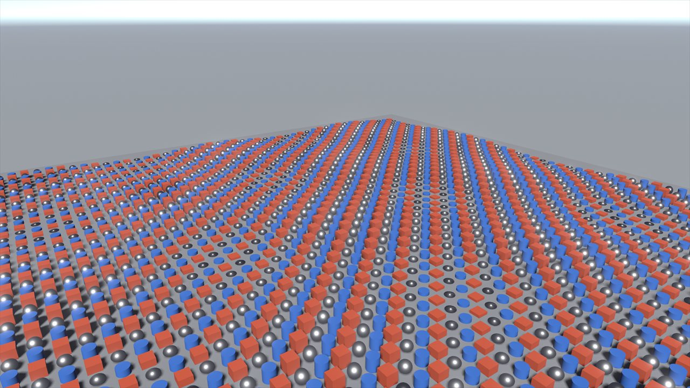
描画
レイトレーシングの影（RayQuery）
平行光源の影を、シャドウマップの代わりに DXR のインラインのレイトレーシング（RayQuery）で付けられるようにしました。ピクセルシェーダーから光の向きへ影の光線を飛ばし、何かに当たれば影にします。
- BLAS はメッシュごとに 1 度作り、場面の TLAS を毎フレーム作る
- 骨で動くモデルは、計算シェーダーでスキンした位置から BLAS を毎フレーム更新するので、動いた形の影が落ちる
- 切り抜きのマテリアルは、当たった三角形の UV でテクスチャのアルファを読み、穴の形の影にする
- 影の光線は、最初に当たった所で止める
- DXR（Tier 1.1）に対応しない GPU では、シャドウマップに切り替えて描く
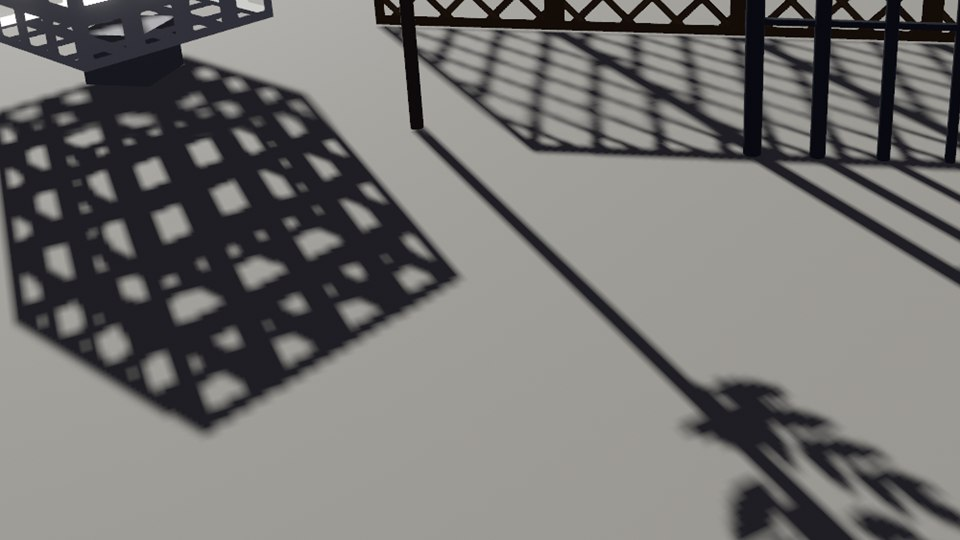
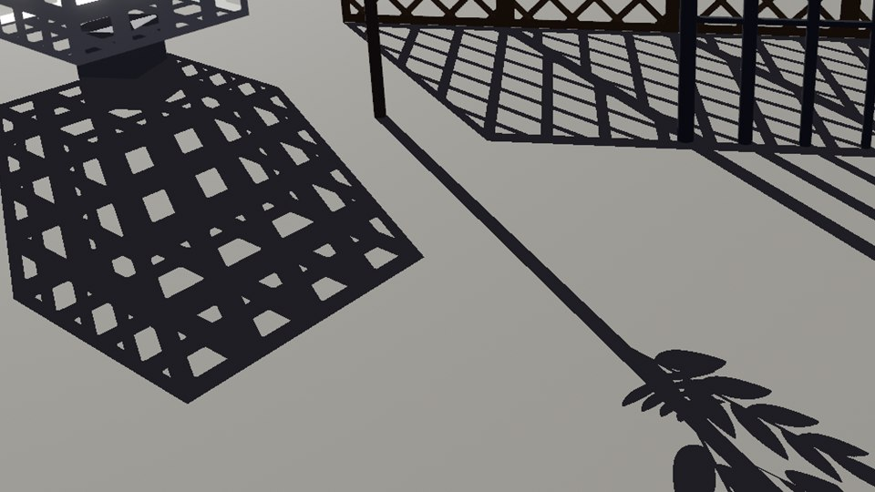
RayDesc ray;
ray.Origin = worldPosition + worldNormal * offset; // シャドウアクネを避けるため、法線の向きに少しずらす
ray.Direction = -g_lightDirection;
ray.TMin = 0.0f;
ray.TMax = SHADOW_RAY_MAX_DISTANCE;
RayQuery<RAY_FLAG_ACCEPT_FIRST_HIT_AND_END_SEARCH | RAY_FLAG_SKIP_PROCEDURAL_PRIMITIVES> query;
query.TraceRayInline(GetSceneAccelerationStructure(), RAY_FLAG_NONE, RAYTRACING_INSTANCE_MASK_SHADOW, ray);
while (query.Proceed())
{
// 切り抜きの三角形は、当たった所の UV でアルファを読んで決める
if (query.CandidateType() == CANDIDATE_NON_OPAQUE_TRIANGLE)
{
if (IsShadowCandidateHitPS(query.CandidateInstanceID() + query.CandidateGeometryIndex(),
query.CandidatePrimitiveIndex(), query.CandidateTriangleBarycentrics()))
{
query.CommitNonOpaqueTriangleHit();
}
}
}
return query.CommittedStatus() == COMMITTED_TRIANGLE_HIT ? 0.0f : 1.0f; // 当たれば影レイトレーシングの AO（DXR のパイプライン）
DXR の専用のパイプライン（ステートオブジェクト、シェーダーテーブル、DispatchRays）を使って、物が接する所や隅を暗くする AO を作りました。
- 深度から画素ごとの位置と法線を作り、レイ生成シェーダーが法線の側の半球に短い光線を数本飛ばす
- ヒットシェーダーは使わず、何にも当たらなかったことをミスシェーダーで返し、届いた割合を AO の値にする
- AO の値を計算シェーダーでぼかし、乗算のブレンドで場面の色に掛ける
- TLAS はレイの影と共通で、インスタンスのマスクで、影の光線と AO の光線が当たる物を分ける
- カメラごとに on と off、光線の長さを変えられる
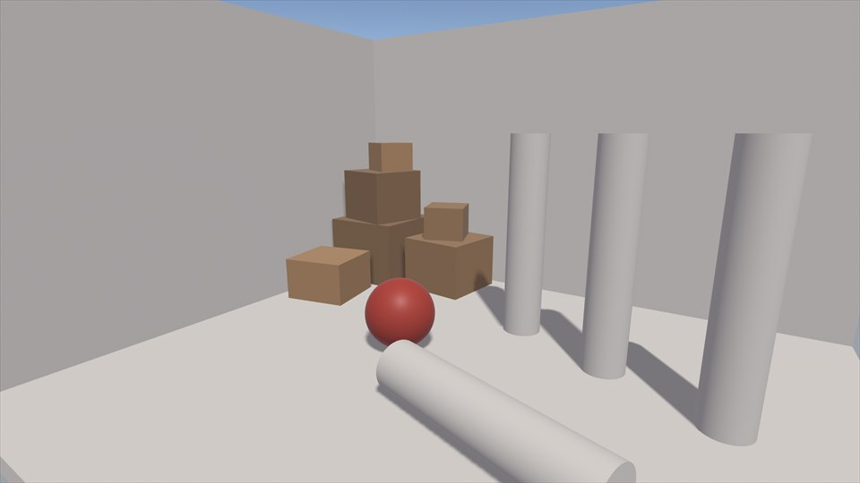
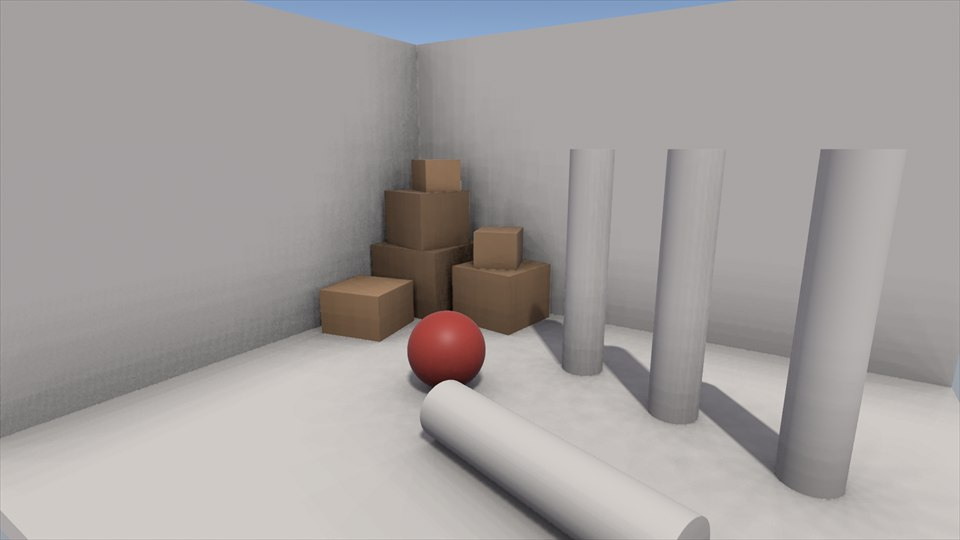
メッシュシェーダーの輪郭線
輪郭線の殻を、頂点シェーダーの代わりにメッシュシェーダーで作れるようにしました。入力アセンブラーは使わず、DispatchMesh で描きます。
- メッシュを作るときに、インデックスを頂点 64・三角形 126 までのメッシュレットに分けて、1 本のバッファに持つ
- メッシュシェーダーの 1 グループが 1 つのメッシュレットの頂点を Bindless で読み、法線の向きに押し出して三角形を出す
- 骨で動くモデルにも使える
- 頂点シェーダーの版と、ビット単位で同じ絵になることを確かめた
- メッシュシェーダーに対応しない GPU では、頂点シェーダーの版で描く
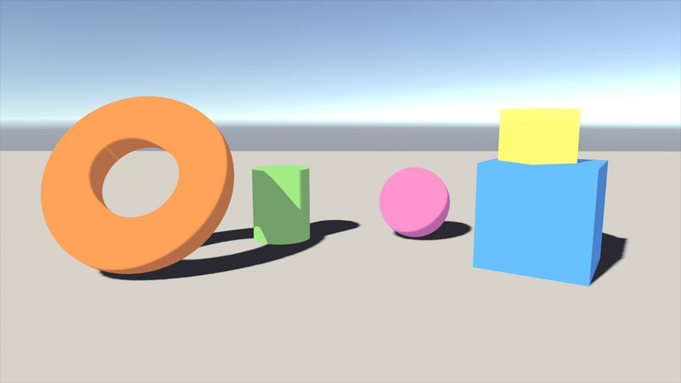
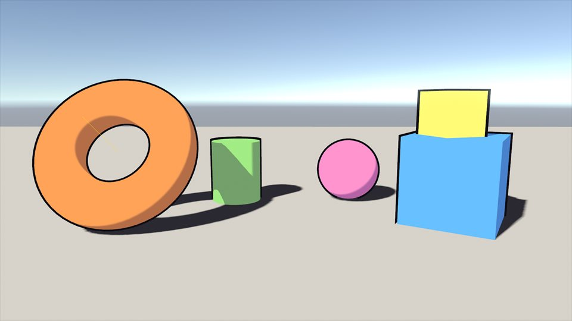
線形の色と HDR
色の計算を線形の値で行い、場面はいつも HDR（16 ビットの浮動小数）の的に描くようにしました。露出、トーンマップ、sRGB への変換は、最後の合成の 1 か所だけで行います。
- 色のテクスチャは sRGB の形式で読み、法線マップなどのデータのテクスチャはそのまま読む
- トーンマップの曲線を、切るだけ・肩・S 字の 3 つから選べる
- 1 を超える明るさを残したまま、ブルームや AO を掛けられる
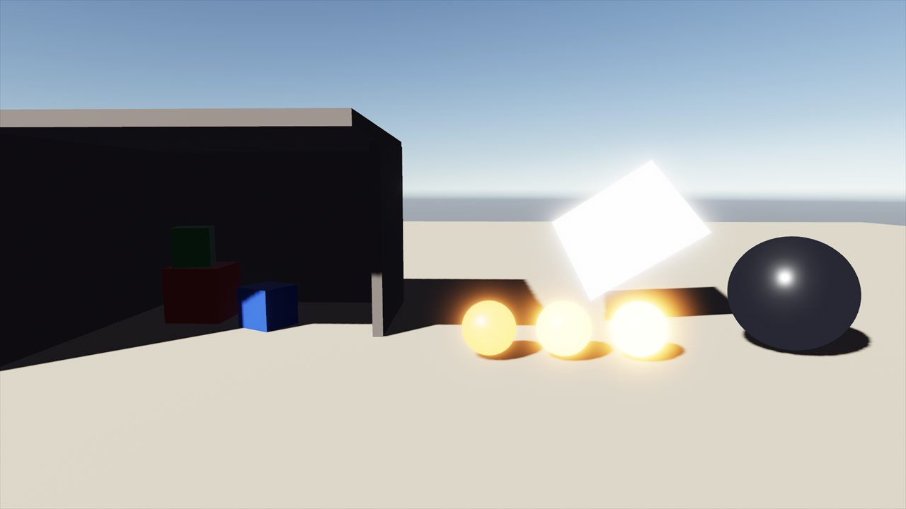
PBR と法線マップ
標準のシェーダーに、金属と粗さの PBR を足しました。鏡面反射は、GGX の分布、高さの相関を入れた Smith の遮蔽、Schlick のフレネルで計算します。
- 拡散は Lambert。金属でない物の正面の反射率は 0.04、金属は基本色
- 法線マップ、金属と粗さ、遮蔽、発光のテクスチャに対応
- glTF の PBR の材質（KHR_materials_unlit、KHR_materials_emissive_strength を含む）を読み、そのまま描ける
- 今の光（平行光源、点光源、スポット）と影（シャドウマップとレイの影）のまま使える
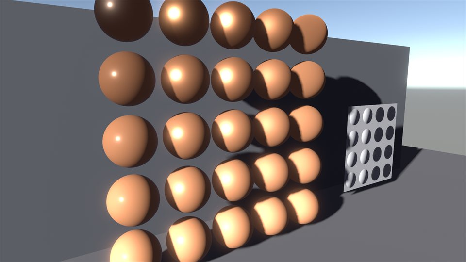
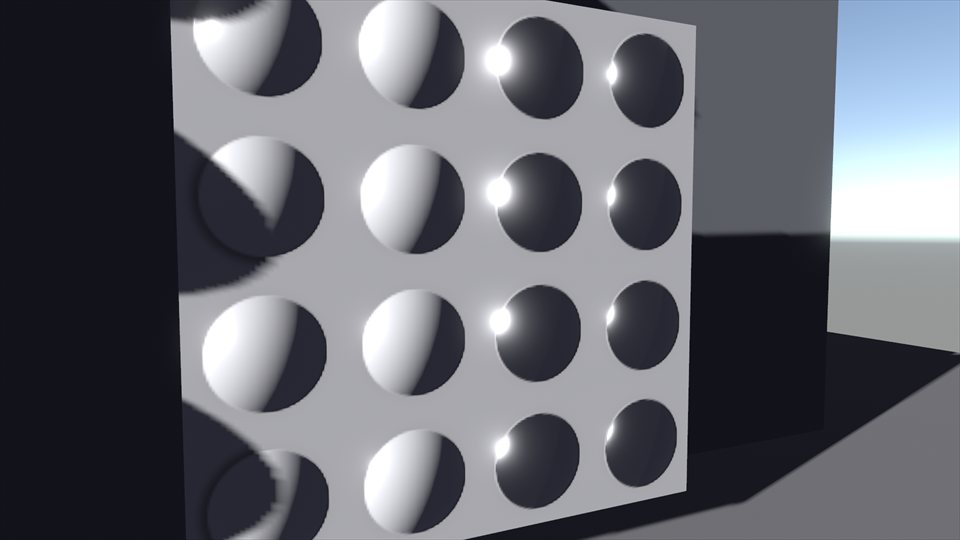
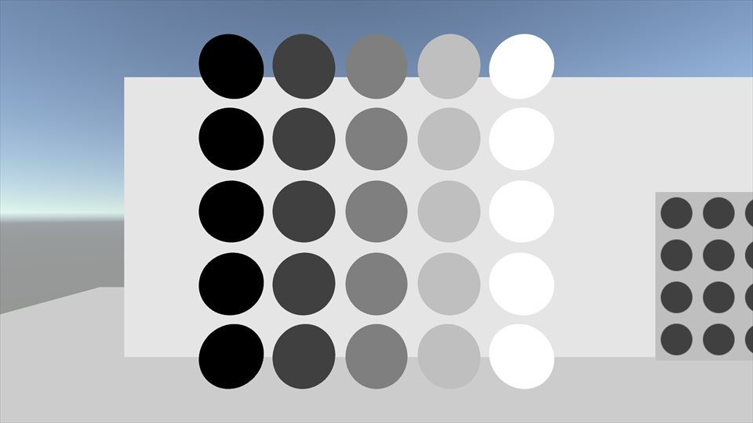
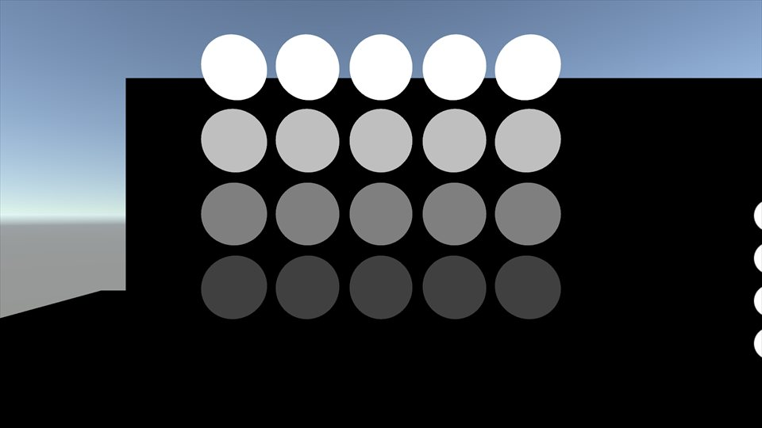
空から作る環境の光（IBL）
空の式を計算シェーダーで評価して、環境の光を実行時に作ります。
- 鏡面: GGX の重点サンプリングで、粗さごとのミップを持つ 64×64 のキューブマップを作る
- 拡散: 球面調和の 9 係数を求める
- 毎フレーム作り直しても、RTX 4060 Laptop で約 0.06 ms（Release、720p）
MSAA と自作の解決
場面の的を MSAA（既定 4x）にし、1 サンプルへの解決を自作のシェーダーで行います。画面に出る色に合わせて平均するので、暗い輪郭線が太く見えたり、とても明るい物の縁に段が残ったりしません。
- サンプル数は 1・2・4・8 から選べ、設定ファイルに残る
- 切り抜きのマテリアルは、アルファ・トゥ・カバレッジで縁をなめらかにする
- MSAA では消えない陰の硬い境目は、fwidth で 1 画素ほどの幅でつなぐ
- PSO の鍵に、サンプル数とアルファ・トゥ・カバレッジを入れた
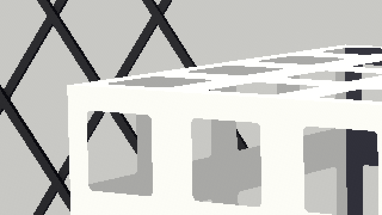
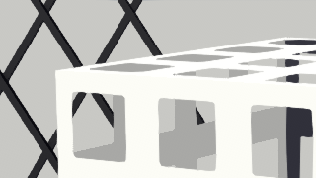
DirectX11 版から移した描画
DirectX11 版で作った描画を、Direct3D 12 の形に作り直しました。描画の中身は、DirectX11 フレームワークのページにまとめています。
- カスケードシャドウマップ: 深度だけの的に、ピクセルシェーダーを置かない PSO で描く
- ポストエフェクト（ブルーム、トーンマップ、ディザ、FXAA）: 的の行き来を、遷移のバリアでまとめる
- トゥーンと輪郭線、パーティクル、画面の UI と SDF の文字
- Direct3D 11 のようにパスの終わりで状態を戻さず、パスごとに要る状態を置く
- 粒と UI の頂点や、文字のアトラスへの書き込みは、アップロード用のリングバッファから切り出す
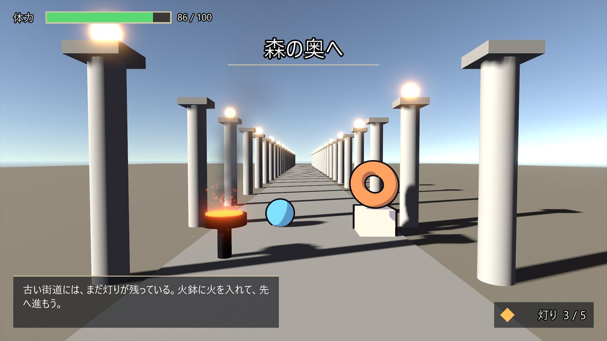
地形と物の多い場面
地形
高さの格子から地形を作り、層で塗り分けます。
- 塊ごとに 4 段の LOD を持ち、継ぎ目はスカートで隠す
- 高さ、法線、レイの問い合わせと、歩ける所の判定
- 最大 8 層を、画素ごとに上位 4 層まで高さで混ぜる。三平面投影に対応
- 折れ線から川の形を彫る（淵と滝を含む）
GPU の草木
草木を、傾き、高さ、水際などの決まりで散らし、GPU で選んで描きます。
- 同じ入力なら同じ配置になる
- 計算シェーダーで 1 本ずつ視錐台と距離で選び、LOD を決める
- 描く数も GPU が書き、ExecuteIndirect で描く。CPU は見える数を読み戻さない
視錐台カリング・自動インスタンス化・LOD
物の多い場面でも、CPU の記録が重くならないようにしました。
- 視錐台カリング: 球で判定し、視点と影の段ごとに行う。影を落とす 20,000 個で、影の記録が 21.19 ms から 1.12 ms に減った
- 自動インスタンス化: 同じメッシュと Material の物をまとめて描く。7,000 個で、不透明の記録が 0.92 ms から 0.05 ms に減った
- LodGroup: 最大 8 段を画面の大きさで選び、ディザで切り替える
- 数値は Release、RTX 4060 Laptop、i7-13700H、720p、同じ立方体を並べた場面で測った
資産と開発の道具
ゲーム側のシェーダー
ゲームのフォルダに置いた .hlsl を、エンジンの標準のシェーダーと同じ決まりでビルドし、マテリアルに渡して描けるようにしました。
- 描画のシェーダーはエンジンと共通のルートシグネチャのままで、ゲームの値はマテリアルの自由な欄（float4 × 4）で渡す
- 標準の光と影の計算を、ゲームのシェーダーから呼べる
- Debug と Development 構成では、標準とゲームのシェーダーを F5 でまとめて読み直せる
- 計算シェーダーも、ゲーム側から作成、実行、非同期の読み戻しができる
- 見本として、縁を光らせながら物を溶かして戻すディゾルブのシェーダーを作った
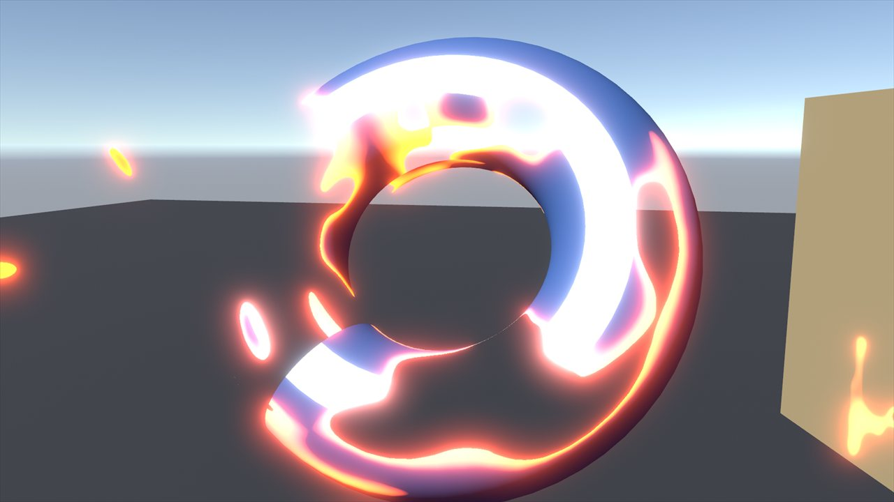
glTF の読み込みと裏の読み込み
glTF 2.0（.gltf と .bin、.glb）の読み込みを、自作の JSON の読み書きの上に作りました。また、資産を裏のスレッドで読み、読み終えてから場面を切り替えられるようにしました。
- glTF: 右手系から左手系に直し、材質（基本色、切り抜き、両面、PBR の値とテクスチャ、発光）をマテリアルに写す
- 動かないモデルは行列を頂点に焼き込み、スキン、モーフ、アニメーションのあるモデルはノードを骨にして読む
- .glb や data URI に埋め込まれた画像も読む
- 読み込みを、ファイルを読んで解く CPU の段と、D3D12 の資源を作ってコピーする GPU の段に分け、CPU の段をワーカースレッドで行う
- GPU の段は、1 フレームに 4 ms ほどを目安に、メインスレッドでまとめて行う
- 読み込みの進み具合を見て、終わってから場面を切り替え、その間は画面をフェードで覆う
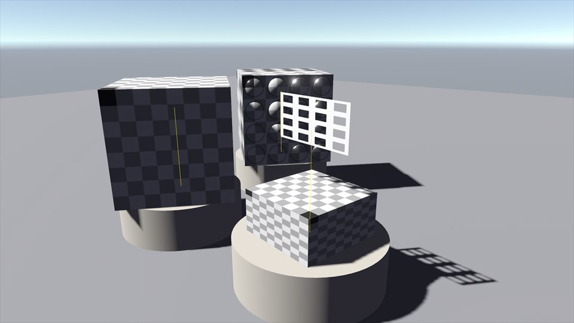
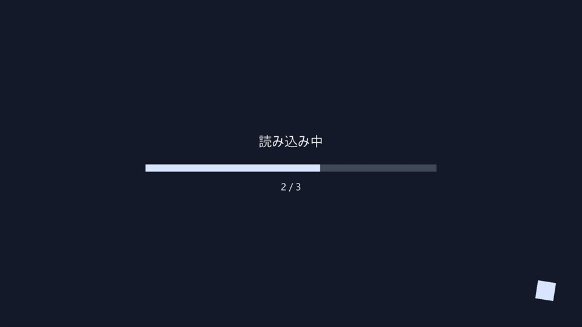
素材の道具 MeshReduce
写真から作った重いモデルを、ゲームで使える軽い GLB にするコンソールの道具です。
- 二次誤差（QEM）の辺の縮約で三角形を減らす。UV のずれも誤差に入れる
- 節の変換の焼き込み、向きと実寸の補正、頂点の溶接、テクスチャの統合と縮小
- 複数のモデルの一括処理と、比べる画像の書き出し
そのほかの機能
ゲームを作って配るために、次の機能も作りました。
- 名前付きの入力: キー・マウス・パッドの割り当てから分けて、「跳ぶ」「進む」のような操作の名前で入力を読む
- 設定とセーブ: 自作の JSON で、ユーザーのフォルダに書く。一時ファイルに書き切ってから名前を替えるので、途中で止まってもファイルが壊れない
- 全画面と DPI: 枠なしの全画面、モニターごとの DPI への対応、VSync の切り替え
- 音: WAV に加えて、MP3・FLAC・M4A・WMA を Media Foundation で読む。LAME タグのある MP3 は、頭と終わりの無音を切ってループする
- 配布: Release の実行ファイルと要る資産だけを zip にまとめるスクリプト。DLL を使わずに動く